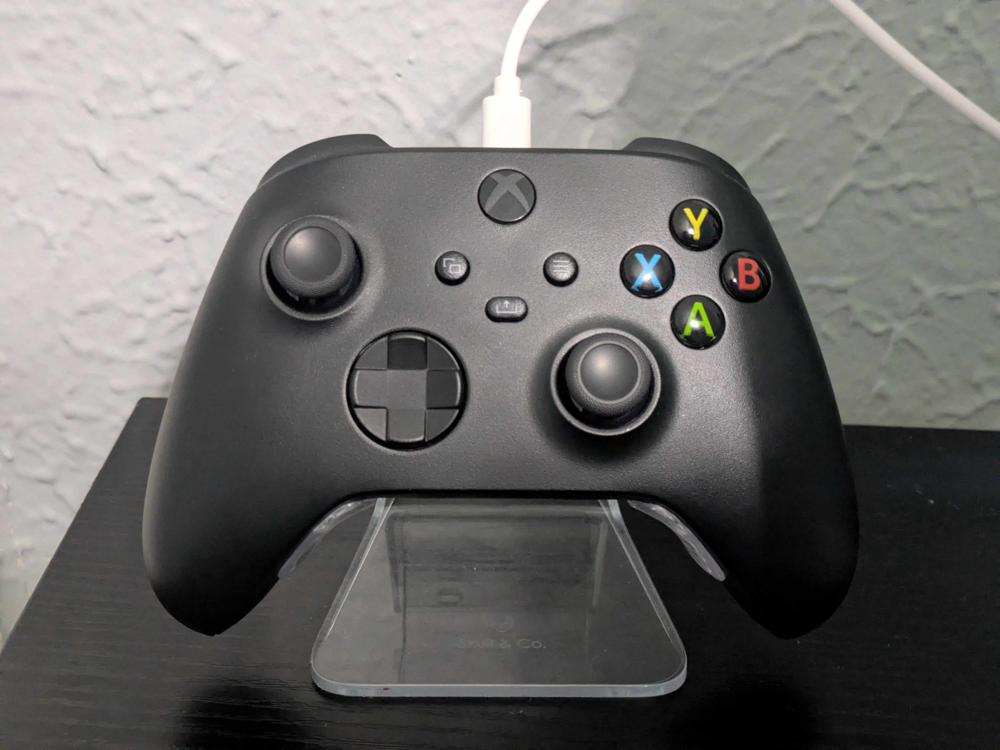
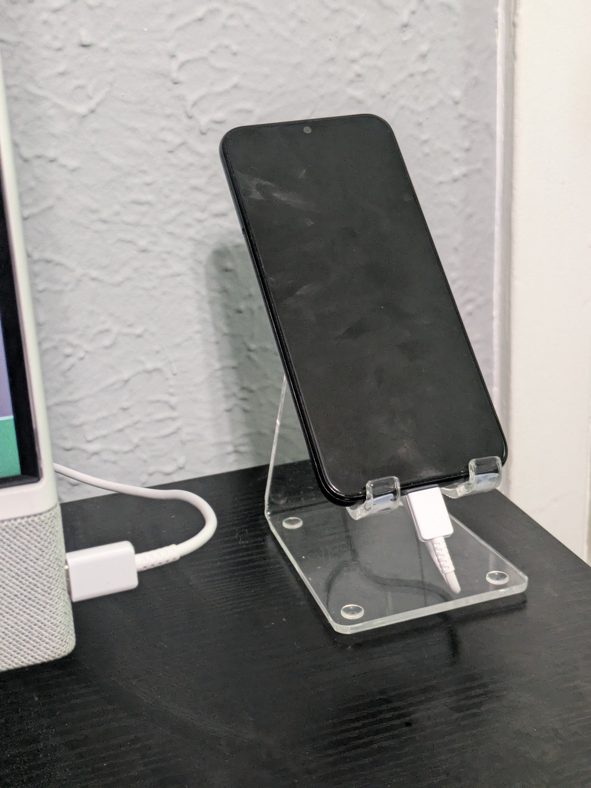
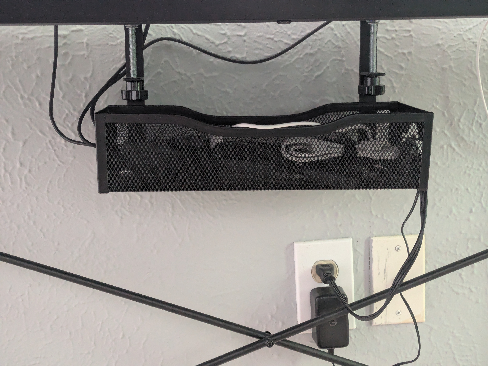
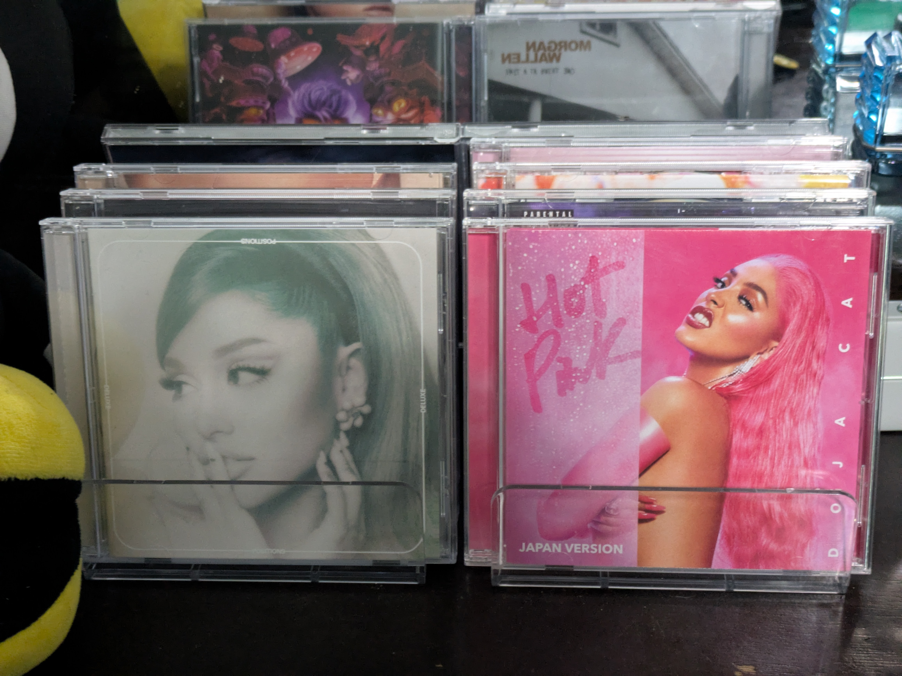
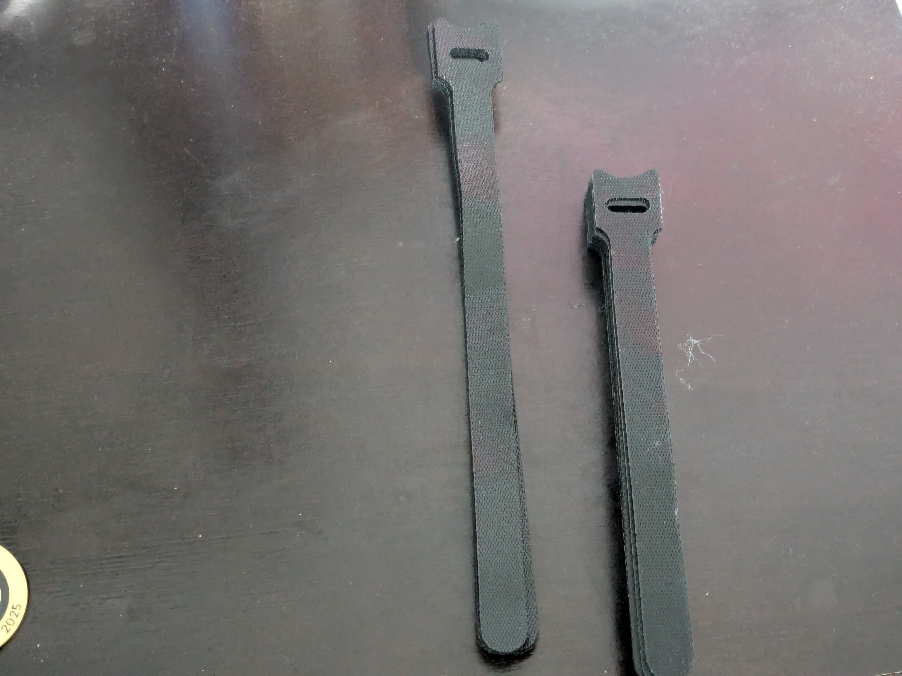
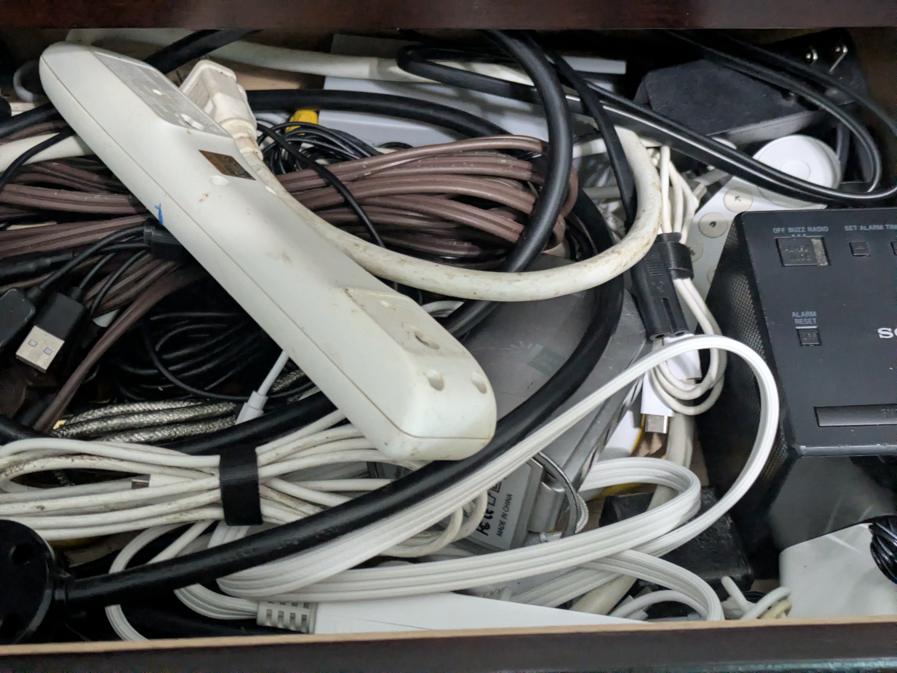
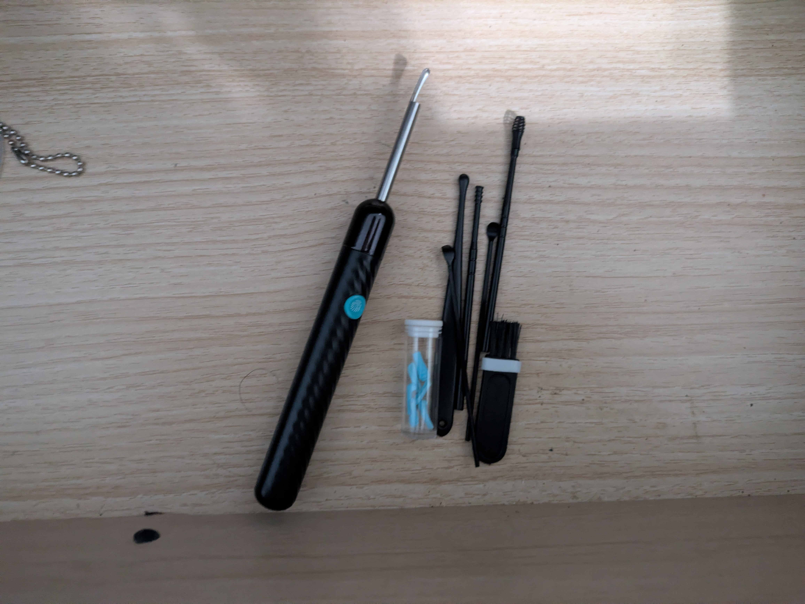
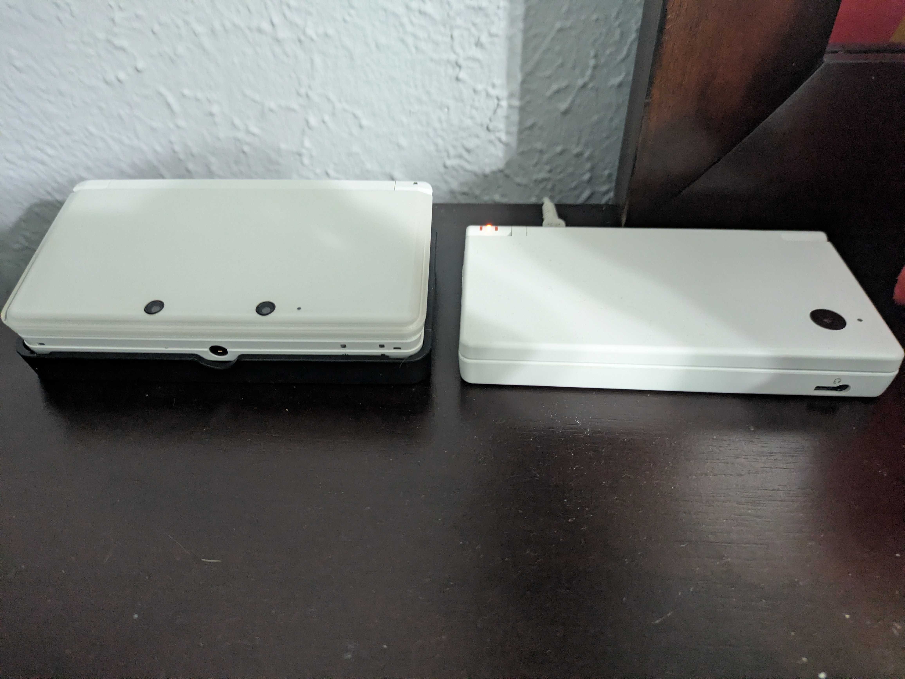
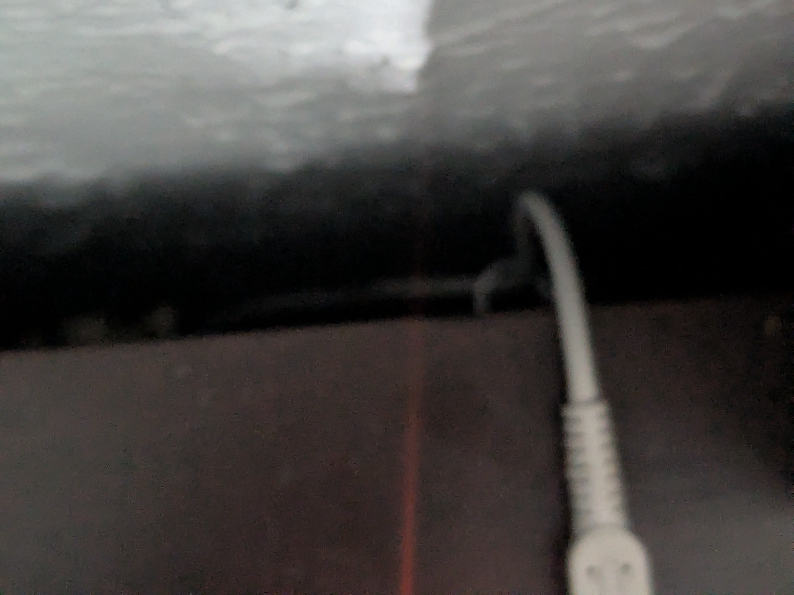

Gadgets From Amazon
July 4, 2026
Happy 4th of July, and what better way to celebrate America than to show off stuff I bought from Jeff Bezo's store? When I was buying from Amazon often, I accumulated a bunch of accessories that I still use today. That is a cool accomplishment for me, as most things I buy often go on a shelf.
Starting off on my desk, one thing to notice is my clear electronic stands. They're not really "gadgets" but they do make the desk better.
On the left corner, we have the Xbox controller stand for epic PC gaming.

The actual controller holder inserts into a base so it can be stacked with other stands if wanted. The insert with the base itself feels jank as if I'm gonna crack the plastic. I remember wanting to get a Nintendo Switch Pro Controller just for emulation, and thinking I would have to get another stand for that as well.
On the right corner, we have the phone charging stand. Bought on the same day as the controller stand, it is also clear.

Not an actual Pixel Stand as I saved money and got a basic stand with a cable hole. With this I can keep my phone propped up next to my computer and transfer files if I need to. Mostly a charger.
Under the desk, we have no wires.

Just kidding, they are held in a desk basket-thing. I wasn't even aware of how nice these are until I tried one, my desk looks way better now with it.
On my dresser now, we have the jewel case stand. Jewel cases can be vertically shelved, but come on.

Look at this, it is like a record store.
Into the actual dresser, we have tons of these cable ties. The short ones were the ties I actually bought and use. The longer ones came with the desk basket and sometimes I use them for more firm extension cords.

These have a massive role down in my cable drawer, it would be a mess without them.

In the top left drawer, I keep the gross earwax cleaner. Not exactly gross but it is when it is used.

It is a pretty nice tool though, way better than risking a cotton swab. Has a bunch of other tools, though only one tool can fit at a time. I also can't stand how it connects to smartphones using Wi-Fi instead of Bluetooth.
Lastly, we have the hidden helpers of my electronics.

I don't think you can see them. Let's get closer.

That thing holding the DSi charger is a Command cord clip. They are a pain to setup some surfaces, but they are pretty neat once you've got them. They can prevent cables from falling behind furniture or make the plugs easy to reach.
At some point I am going to return to my Amazon sprees and maybe get some stuff from Vat19.